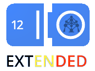

EU Hackathon - Hack 4 kids
20/21 June 2012, Googleplex, Brussels

Hackathon about creativity and security organized with the European Parliament.
2nd Random Hacks of Kindness in Brussels
2/3 June 2012, Kontich, near Antwerp, Gent and Brussels.
The mission of the global RHoK movement is to make the world a better place through a global community of innovation developing practical open technology. Hacking for Humanity, so to speak.
UXperts
11 June 2012
Full day about understanding Mobile audiences from different perspectives: Windows marketplace and Android market place. Speakers will be development , UX and business focused, including Google
Registration opens on 15 May uxperts.mobi
Google I/O Extended Brussels
27 June 2012, Googleplex, Brussels

Brussels GTUG and others invite to watch the live keynote of Google I/O